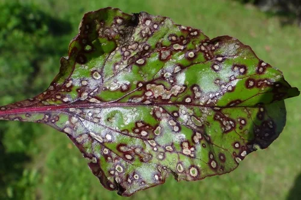
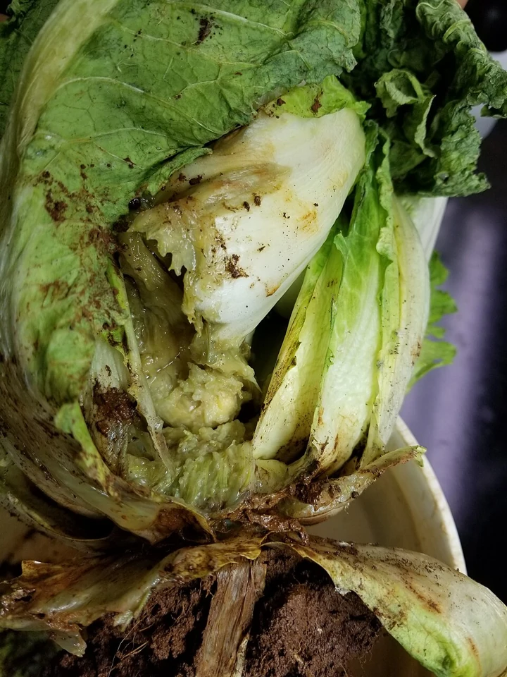
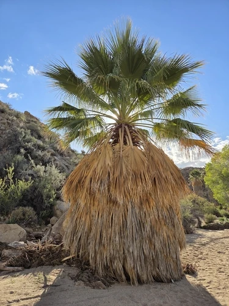
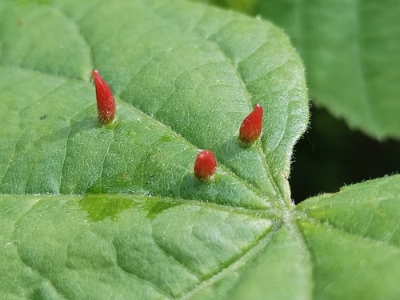

叶的问题

叶片上出现褐色的斑块比较朝窗与背窗的叶片；记录损伤在叶缘、叶脉之间还是散布叶面。

褐斑带有黄色边缘留意黄色是否只环绕褐斑，湿润时斑块有无水渍状边缘。

叶片上出现细密褐点用放大镜看叶背，观察细点能否擦去，并检查叶脉附近有无活动的小虫。

叶片从叶尖开始变褐干枯观察尖端是否干脆、边缘是否逐渐变宽，同时查看盆沿有无白色盐渍。

叶片上出现黑色斑块查看黑色病斑是否长在叶组织内、周围是否发黄，并检查较低叶片有无提前脱落。

细密的黑点用放大镜观察黑点在叶面上还是组织内部，再看看叶背是否有细长小虫。

灰斑带深色边缘比较斑点中央与边缘的颜色，看多个斑是否逐渐相连。

没有扩大的浅色斑纹拍照记录斑纹并对照新长的叶片，看是否仍只出现在旧叶受光或摩擦的一面。

浅色弯曲的潜道迎光查看弯曲痕迹是否夹在两层表皮之间，并看末端是否变宽。

沿叶脉边界的黄色斑块翻看斑块背面有无绒层，观察黄色区域的边界是否受叶脉限制。

散在的黄白色斑点比较斑点与日晒方向、喷溅位置的关系，检查叶背虫迹。

叶面密布黄白色针点沿主叶脉和叶背寻找活动螨虫、细网或残余虫皮。

枝叶上有可剥离的小壳用放大镜检查叶脉和枝条上的突起，区分虫壳与植物本身的组织。

干土中的下叶发黄并萎蔫检查根团中部，水是否沿盆壁迅速流走而未湿润中心。

湿土中的下叶成片发黄看看表土以下是否持续湿黏、套盆是否积水，同时比较顶部新叶。

少量老叶逐渐发黄标记变黄的叶片，记录它们是否都是最老的下叶。

多处叶片同时变黄记录先发黄的是新叶还是老叶，是否整株都处在相同光照中。

叶肉黄而叶脉绿观察叶脉间失绿是先发生在新叶还是老叶，拍下叶片正面。

叶脉变黄，叶肉仍绿比较多片新旧叶，观察变色是否严格沿叶脉，并记录叶形变化。

茎细长，叶色变浅比较新枝与旧枝的节间距离，看植株是否朝光源倾斜。

叶片发软腐烂查看受害叶是否贴土或贴着湿叶，是否有水渍状边缘。

叶缘发黑变软确认黑边是干脆还是湿软，回顾是否碰到冷窗或受过低温。

少量下叶干枯比较枯叶与最近长出的叶片，看叶柄处是否自然干脱。

叶形不规则记录畸形是否只在一个生长点，并观察尚未展开的新叶有无虫体。

叶片有突起或瘿瘤观察突起是否来自叶组织本身，在叶片另一侧是否也能看到对应形状。

叶片边缘卷曲观察卷曲方向，比较中午和傍晚的叶形，并检查土壤干湿。

新叶扭曲，局部发红检查多个枝尖的嫩叶，观察红色是正常新叶色还是伴随增厚起泡。

叶片卷成筒状轻轻打开一片卷叶，查看是否有丝、粪粒或幼虫。

短足、身体分节的幼虫沿着新鲜咬孔寻找幼虫，检查叶片折叠处和枝条背面。

叶面有椭圆形甲虫和咬孔拍下甲虫翅鞘、体形和它正在取食的位置。

带长吻的甲虫和叶缘缺刻观察叶缘是否有半圆形缺刻，夜间看看植株上是否出现长吻甲虫。

褐斑中心脱落成孔观察新旧斑点，看看孔边是否留有一圈褐色组织。

茎萎蔫检查下垂的茎是否还有弹性，茎基是否折伤，以及根团内部的干湿。

可擦去的白色粉层观察粉层是否呈不规则斑块，是否同时覆盖叶、嫩茎或果面。

叶腋有白色棉絮状小虫仔细查看叶柄连接处，寻找蜡絮覆盖的虫体及附近的蜜露。

叶面有可擦去的黑层擦拭一小块叶面，检查上方枝叶是否发黏或有介壳虫。

红褐色斑点与粉状小疱翻看叶背有无橙褐色突起，比较叶面同一位置是否褪色。

茎上出现灰褐色霉层检查霉层是否从伤口、凋谢花或坏死组织附近开始，观察茎是否仍坚实。